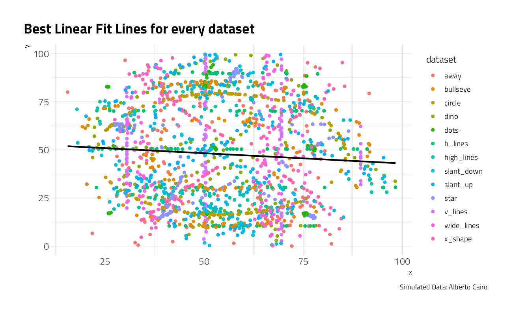
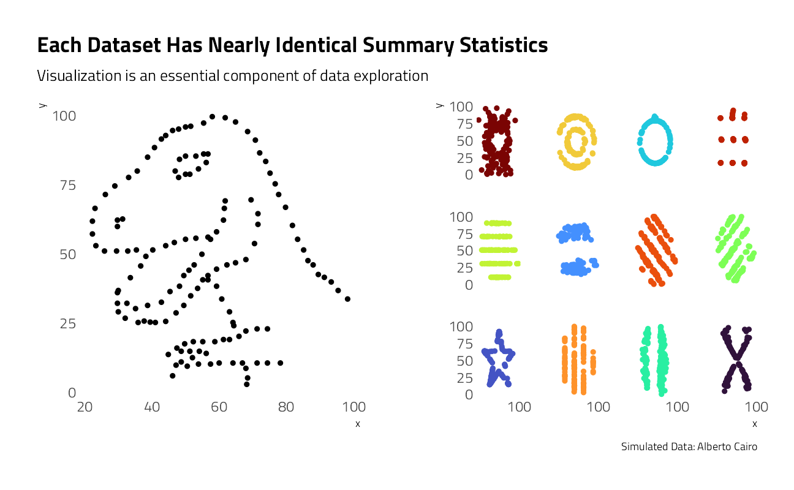
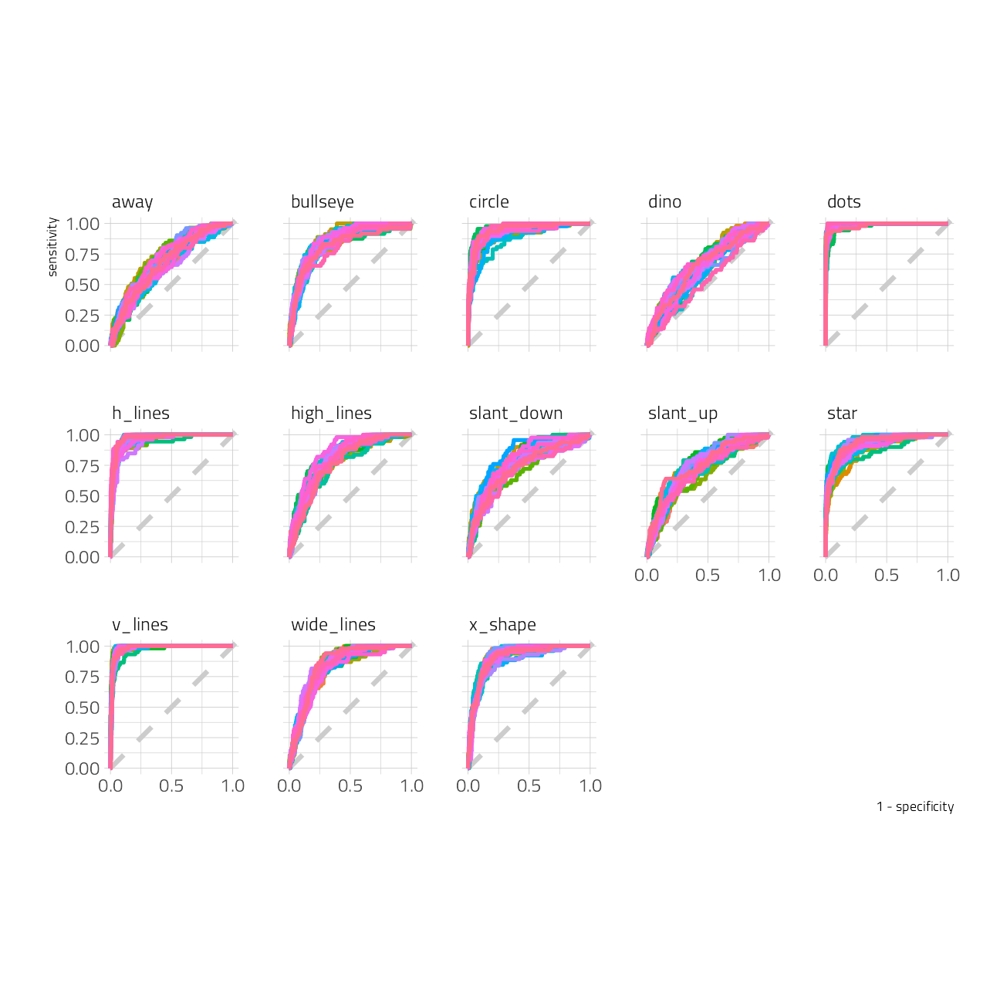
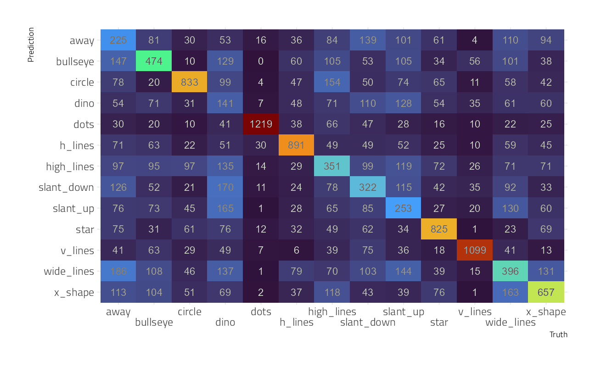

Last updated: 2021-09-21
Checks: 7 0
Knit directory: myTidyTuesday/
This reproducible R Markdown analysis was created with workflowr (version 1.6.2). The Checks tab describes the reproducibility checks that were applied when the results were created. The Past versions tab lists the development history.
Great! Since the R Markdown file has been committed to the Git repository, you know the exact version of the code that produced these results.
Great job! The global environment was empty. Objects defined in the global environment can affect the analysis in your R Markdown file in unknown ways. For reproduciblity it’s best to always run the code in an empty environment.
The command set.seed(20210907) was run prior to running the code in the R Markdown file. Setting a seed ensures that any results that rely on randomness, e.g. subsampling or permutations, are reproducible.
Great job! Recording the operating system, R version, and package versions is critical for reproducibility.
Nice! There were no cached chunks for this analysis, so you can be confident that you successfully produced the results during this run.
Great job! Using relative paths to the files within your workflowr project makes it easier to run your code on other machines.
Great! You are using Git for version control. Tracking code development and connecting the code version to the results is critical for reproducibility.
The results in this page were generated with repository version b45d888. See the Past versions tab to see a history of the changes made to the R Markdown and HTML files.
Note that you need to be careful to ensure that all relevant files for the analysis have been committed to Git prior to generating the results (you can use wflow_publish or wflow_git_commit). workflowr only checks the R Markdown file, but you know if there are other scripts or data files that it depends on. Below is the status of the Git repository when the results were generated:
Ignored files:
Ignored: .Rhistory
Ignored: .Rproj.user/
Ignored: catboost_info/
Ignored: data/2021-09-08/
Ignored: data/acs_poverty.rds
Ignored: data/fmhpi.rds
Ignored: data/grainstocks.rds
Ignored: data/hike_data.rds
Ignored: data/us_states.rds
Ignored: data/us_states_hexgrid.geojson
Ignored: data/weatherstats_toronto_daily.csv
Untracked files:
Untracked: code/work list batch targets.R
Untracked: figure/
Unstaged changes:
Modified: code/_common.R
Note that any generated files, e.g. HTML, png, CSS, etc., are not included in this status report because it is ok for generated content to have uncommitted changes.
These are the previous versions of the repository in which changes were made to the R Markdown (analysis/Datasaurus.Rmd) and HTML (docs/Datasaurus.html) files. If you’ve configured a remote Git repository (see ?wflow_git_remote), click on the hyperlinks in the table below to view the files as they were in that past version.
| File | Version | Author | Date | Message |
|---|---|---|---|---|
| html | fa30624 | opus1993 | 2021-09-21 | Build site. |
| Rmd | c032c8f | opus1993 | 2021-09-21 | new viridis color scheme, fix multiclass confusion matrix |
This week’s Tidy Tuesday speaks to the importance of visualization in data exploration. Alberto Cairo created this simulated data set in order to demonstrate how misleading summary statistics can be and to show how useful visualization is in uncovering patterns in data. In this spirit, let’s start exploring this data set to see what we find.
tt <- tidytuesdayR::tt_load("2020-10-13")
Downloading file 1 of 1: `datasaurus.csv`We have 1,846 sets of x and y coordinates divided up into thirteen named descriptive data sets.
datasaurus <- tt$datasaurus
datasaurus %>%
group_by(dataset) %>%
summarise(across(
c(x, y),
list(mean = mean, sd = sd)
),
x_y_cor = cor(x, y)
) %>%
knitr::kable(digits = c(0, 2, 2, 2, 2, 2))| dataset | x_mean | x_sd | y_mean | y_sd | x_y_cor |
|---|---|---|---|---|---|
| away | 54.27 | 16.77 | 47.83 | 26.94 | -0.06 |
| bullseye | 54.27 | 16.77 | 47.83 | 26.94 | -0.07 |
| circle | 54.27 | 16.76 | 47.84 | 26.93 | -0.07 |
| dino | 54.26 | 16.77 | 47.83 | 26.94 | -0.06 |
| dots | 54.26 | 16.77 | 47.84 | 26.93 | -0.06 |
| h_lines | 54.26 | 16.77 | 47.83 | 26.94 | -0.06 |
| high_lines | 54.27 | 16.77 | 47.84 | 26.94 | -0.07 |
| slant_down | 54.27 | 16.77 | 47.84 | 26.94 | -0.07 |
| slant_up | 54.27 | 16.77 | 47.83 | 26.94 | -0.07 |
| star | 54.27 | 16.77 | 47.84 | 26.93 | -0.06 |
| v_lines | 54.27 | 16.77 | 47.84 | 26.94 | -0.07 |
| wide_lines | 54.27 | 16.77 | 47.83 | 26.94 | -0.07 |
| x_shape | 54.26 | 16.77 | 47.84 | 26.93 | -0.07 |
These data sets have a lot in common. Specifically the x and y means, x and y standard deviations, and Pearson’s correlation coefficients are nearly identical.
Let’s try fitting each data set to a linear model to each:
datasaurus %>%
nest(data = -dataset) %>%
mutate(
model = map(data, ~ lm(y ~ x, data = .)),
tidied = map(model, broom::tidy)
) %>%
unnest(tidied) %>%
select(-data, -model) %>%
knitr::kable(digits = c(0, 0, 2, 2, 2, 2))| dataset | term | estimate | std.error | statistic | p.value |
|---|---|---|---|---|---|
| dino | (Intercept) | 53.45 | 7.69 | 6.95 | 0.00 |
| dino | x | -0.10 | 0.14 | -0.76 | 0.45 |
| away | (Intercept) | 53.43 | 7.69 | 6.94 | 0.00 |
| away | x | -0.10 | 0.14 | -0.76 | 0.45 |
| h_lines | (Intercept) | 53.21 | 7.70 | 6.91 | 0.00 |
| h_lines | x | -0.10 | 0.14 | -0.73 | 0.47 |
| v_lines | (Intercept) | 53.89 | 7.69 | 7.01 | 0.00 |
| v_lines | x | -0.11 | 0.14 | -0.82 | 0.41 |
| x_shape | (Intercept) | 53.55 | 7.69 | 6.97 | 0.00 |
| x_shape | x | -0.11 | 0.14 | -0.78 | 0.44 |
| star | (Intercept) | 53.33 | 7.69 | 6.93 | 0.00 |
| star | x | -0.10 | 0.14 | -0.75 | 0.46 |
| high_lines | (Intercept) | 53.81 | 7.69 | 6.99 | 0.00 |
| high_lines | x | -0.11 | 0.14 | -0.81 | 0.42 |
| dots | (Intercept) | 53.10 | 7.69 | 6.90 | 0.00 |
| dots | x | -0.10 | 0.14 | -0.72 | 0.48 |
| circle | (Intercept) | 53.80 | 7.69 | 6.99 | 0.00 |
| circle | x | -0.11 | 0.14 | -0.81 | 0.42 |
| bullseye | (Intercept) | 53.81 | 7.69 | 7.00 | 0.00 |
| bullseye | x | -0.11 | 0.14 | -0.81 | 0.42 |
| slant_up | (Intercept) | 53.81 | 7.69 | 7.00 | 0.00 |
| slant_up | x | -0.11 | 0.14 | -0.81 | 0.42 |
| slant_down | (Intercept) | 53.85 | 7.69 | 7.00 | 0.00 |
| slant_down | x | -0.11 | 0.14 | -0.82 | 0.41 |
| wide_lines | (Intercept) | 53.63 | 7.69 | 6.97 | 0.00 |
| wide_lines | x | -0.11 | 0.14 | -0.79 | 0.43 |
The intercept, slope and standard errors are all pretty much identical to each other. Let’s plot these models and take a look.
datasaurus %>%
ggplot(aes(x, y, color = dataset)) +
geom_point() +
geom_smooth(
method = "lm",
formula = y ~ x,
se = FALSE,
color = "black"
) +
labs(
title = "Best Linear Fit Lines for every dataset",
caption = "Simulated Data: Alberto Cairo"
)
The models match up nicely, but there’s a lot of noise and there seem to be some strong unexplained patterns in the underlying data. Let’s look at each data set individually.
left_plot <- datasaurus %>%
filter(dataset == "dino") %>%
ggplot(aes(x, y)) +
geom_point(show.legend = FALSE) +
theme(
panel.grid.major = element_blank(),
panel.grid.minor = element_blank()
) +
labs(
title = "Each Dataset Has Nearly Identical Summary Statistics",
subtitle = "Visualization is an essential component of data exploration",
caption = ""
)
right_plot <- datasaurus %>%
filter(dataset != "dino") %>%
ggplot(aes(x, y, color = dataset)) +
geom_point(show.legend = FALSE) +
scale_x_continuous(n.breaks = 2) +
facet_wrap(~dataset) +
theme(
strip.text = element_blank(),
panel.grid.major = element_blank(),
panel.grid.minor = element_blank()
) +
labs(
title = "",
subtitle = "",
caption = "Simulated Data: Alberto Cairo"
)
grid.arrange(left_plot, right_plot, ncol = 2)
These plots are much more different than the summary statistics alone would suggest!
Based largely on @juliasilge’s work at Datasaurus Multiclass
Let’s explore whether we can use modeling to predict which dataset a point belongs to. This is not a large dataset compared to the number of classes (13!) so this will not be a tutorial for best practices for a predictive modeling workflow overall, but it does demonstrate how to evaluate a multiclass model, as well as a bit about how random forest models work.
Let’s start out by creating bootstrap resamples of the Datasaurus Dozen. Notice that we aren’t splitting into testing and training sets, so we won’t have an unbiased estimate of performance on new data. Instead, we will use these resamples to understand the dataset and multiclass models better.
dino_folds <- datasaurus %>%
mutate(dataset = factor(dataset)) %>%
bootstraps()Let’s create a random forest model and set up a model workflow with the model and a formula preprocessor. We are predicting the dataset class (dino vs. circle vs. bullseye vs. …) from x and y. A random forest model can often do a good job of learning complex interactions in predictors.
rf_spec <- rand_forest(trees = 1000) %>%
set_mode("classification") %>%
set_engine("ranger")
dino_wf <- workflow() %>%
add_formula(dataset ~ x + y) %>%
add_model(rf_spec)Let’s fit the random forest model to the bootstrap resamples.
# register a parallel backend, leaving one core available
all_cores <- parallelly::availableCores(omit = 1)
all_coressystem
11 future::plan("multisession", workers = all_cores) # on Windows
dino_rs <- fit_resamples(
dino_wf,
resamples = dino_folds,
control = control_resamples(save_pred = TRUE)
)How did these models do overall?
collect_metrics(dino_rs) %>% knitr::kable()| .metric | .estimator | mean | n | std_err | .config |
|---|---|---|---|---|---|
| accuracy | multiclass | 0.4531722 | 25 | 0.0031611 | Preprocessor1_Model1 |
| roc_auc | hand_till | 0.8475001 | 25 | 0.0014127 | Preprocessor1_Model1 |
The accuracy is not great; a multiclass problem like this, especially one with so many classes, is harder than a binary classification problem. There are so many possible wrong answers!
Since we saved the predictions with save_pred = TRUE we can compute other performance metrics. Notice that by default the positive predictive value (like accuracy) is macro-weighted for multiclass problems.
dino_rs %>%
collect_predictions() %>%
group_by(id) %>%
ppv(dataset, .pred_class) %>%
knitr::kable(digits = c(0, 0, 0, 3))| id | .metric | .estimator | .estimate |
|---|---|---|---|
| Bootstrap01 | ppv | macro | 0.414 |
| Bootstrap02 | ppv | macro | 0.440 |
| Bootstrap03 | ppv | macro | 0.452 |
| Bootstrap04 | ppv | macro | 0.434 |
| Bootstrap05 | ppv | macro | 0.460 |
| Bootstrap06 | ppv | macro | 0.400 |
| Bootstrap07 | ppv | macro | 0.414 |
| Bootstrap08 | ppv | macro | 0.404 |
| Bootstrap09 | ppv | macro | 0.444 |
| Bootstrap10 | ppv | macro | 0.449 |
| Bootstrap11 | ppv | macro | 0.422 |
| Bootstrap12 | ppv | macro | 0.430 |
| Bootstrap13 | ppv | macro | 0.456 |
| Bootstrap14 | ppv | macro | 0.415 |
| Bootstrap15 | ppv | macro | 0.439 |
| Bootstrap16 | ppv | macro | 0.449 |
| Bootstrap17 | ppv | macro | 0.419 |
| Bootstrap18 | ppv | macro | 0.428 |
| Bootstrap19 | ppv | macro | 0.460 |
| Bootstrap20 | ppv | macro | 0.425 |
| Bootstrap21 | ppv | macro | 0.396 |
| Bootstrap22 | ppv | macro | 0.421 |
| Bootstrap23 | ppv | macro | 0.436 |
| Bootstrap24 | ppv | macro | 0.420 |
| Bootstrap25 | ppv | macro | 0.424 |
Next, let’s compute ROC curves for each class.
dino_rs %>%
collect_predictions() %>%
group_by(id) %>%
roc_curve(dataset, .pred_away:.pred_x_shape) %>%
ggplot(aes(1 - specificity, sensitivity, color = id)) +
geom_abline(lty = 2, color = "gray80", size = 1.5) +
geom_path(show.legend = FALSE, size = 1.2) +
scale_x_continuous(n.breaks = 3) +
facet_wrap(~.level, ncol = 5) +
coord_equal()
We have an ROC curve for each class and each resample in this plot. Notice that the points dataset was easy for the model to identify while the dino dataset was very difficult. The model barely did better than guessing for the dino!
We can also compute a confusion matrix. We could use tune::conf_mat_resampled() but since there are so few examples per class and the classes were balanced, let’s just look at all the resamples together.
dino_rs %>%
collect_predictions() %>%
conf_mat(dataset, .pred_class) %>%
autoplot(type = "heatmap") +
theme(text = element_text(size = 12))
There is some real variability on the diagonal, with a factor of 10 difference from dinos to dots.
The dino dataset was confused with many of the other datasets, and `wide_lines was often confused with both slant_up and away.
sessionInfo()R version 4.1.1 (2021-08-10)
Platform: x86_64-w64-mingw32/x64 (64-bit)
Running under: Windows 10 x64 (build 19043)
Matrix products: default
locale:
[1] LC_COLLATE=English_United States.1252
[2] LC_CTYPE=English_United States.1252
[3] LC_MONETARY=English_United States.1252
[4] LC_NUMERIC=C
[5] LC_TIME=English_United States.1252
attached base packages:
[1] stats graphics grDevices utils datasets methods base
other attached packages:
[1] ranger_0.13.1 vctrs_0.3.8 rlang_0.4.11 yardstick_0.0.8
[5] workflowsets_0.1.0 workflows_0.2.3 tune_0.1.6 rsample_0.1.0
[9] recipes_0.1.16 parsnip_0.1.7.900 modeldata_0.1.1 infer_1.0.0
[13] dials_0.0.10 scales_1.1.1 tidymodels_0.1.3 gridExtra_2.3
[17] broom_0.7.9 forcats_0.5.1 stringr_1.4.0 dplyr_1.0.7
[21] purrr_0.3.4 readr_2.0.1 tidyr_1.1.3 tibble_3.1.4
[25] ggplot2_3.3.5 tidyverse_1.3.1 workflowr_1.6.2
loaded via a namespace (and not attached):
[1] readxl_1.3.1 backports_1.2.1 systemfonts_1.0.2
[4] selectr_0.4-2 plyr_1.8.6 tidytuesdayR_1.0.1
[7] splines_4.1.1 listenv_0.8.0 usethis_2.0.1
[10] digest_0.6.27 foreach_1.5.1 htmltools_0.5.2
[13] viridis_0.6.1 fansi_0.5.0 magrittr_2.0.1
[16] tzdb_0.1.2 globals_0.14.0 modelr_0.1.8
[19] gower_0.2.2 extrafont_0.17 vroom_1.5.5
[22] R.utils_2.10.1 extrafontdb_1.0 hardhat_0.1.6
[25] colorspace_2.0-2 rvest_1.0.1 textshaping_0.3.5
[28] haven_2.4.3 xfun_0.26 prismatic_1.0.0
[31] crayon_1.4.1 jsonlite_1.7.2 survival_3.2-11
[34] iterators_1.0.13 glue_1.4.2 gtable_0.3.0
[37] ipred_0.9-12 R.cache_0.15.0 Rttf2pt1_1.3.9
[40] future.apply_1.8.1 DBI_1.1.1 Rcpp_1.0.7
[43] viridisLite_0.4.0 bit_4.0.4 GPfit_1.0-8
[46] lava_1.6.10 prodlim_2019.11.13 httr_1.4.2
[49] ellipsis_0.3.2 farver_2.1.0 pkgconfig_2.0.3
[52] R.methodsS3_1.8.1 nnet_7.3-16 sass_0.4.0
[55] dbplyr_2.1.1 utf8_1.2.2 here_1.0.1
[58] labeling_0.4.2 tidyselect_1.1.1 DiceDesign_1.9
[61] later_1.3.0 munsell_0.5.0 cellranger_1.1.0
[64] tools_4.1.1 cachem_1.0.6 cli_3.0.1
[67] generics_0.1.0 evaluate_0.14 fastmap_1.1.0
[70] yaml_2.2.1 ragg_1.1.3 bit64_4.0.5
[73] knitr_1.34 fs_1.5.0 nlme_3.1-152
[76] future_1.22.1 whisker_0.4 R.oo_1.24.0
[79] xml2_1.3.2 compiler_4.1.1 rstudioapi_0.13
[82] curl_4.3.2 reprex_2.0.1 lhs_1.1.3
[85] bslib_0.3.0 stringi_1.7.4 highr_0.9
[88] gdtools_0.2.3 hrbrthemes_0.8.0 lattice_0.20-44
[91] Matrix_1.3-4 styler_1.6.1 conflicted_1.0.4
[94] pillar_1.6.2 lifecycle_1.0.0 furrr_0.2.3
[97] jquerylib_0.1.4 httpuv_1.6.3 R6_2.5.1
[100] promises_1.2.0.1 parallelly_1.28.1 codetools_0.2-18
[103] MASS_7.3-54 assertthat_0.2.1 rprojroot_2.0.2
[106] withr_2.4.2 mgcv_1.8-36 parallel_4.1.1
[109] hms_1.1.0 grid_4.1.1 rpart_4.1-15
[112] timeDate_3043.102 class_7.3-19 rmarkdown_2.11
[115] git2r_0.28.0 pROC_1.18.0 lubridate_1.7.10